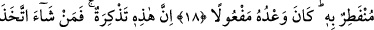

ÇOCUKLARI
AK SAÇLI İHTİYARLARA
ÇEVİRECEK O GÜNDEN
SAKININ
15. Nasıl Fir’avun’a bir elçi göndermiş idiysek doğrusu size de, hakkınızda
şâhidlik edecek bir peygamber gönderdik.
16. Ama Fir’avun o peygambere karşı gelmiş, biz de onu ağır ve çetin bir şekilde
muaheze etmiştik.
17. Peki inkâr ederseniz, çocukları ak saçlı ihtiyarlara çevirecek o günden
kendinizi nasıl koruyabileceksiniz?
18. Gökyüzü bile onunla (o günün dehşetiyle) yarılacaktır. Allah’ın vaadi mutlaka
yerine gelir.
19. İşte bu (anlatılanlar), şüphesiz bir öğüttür. Artık kim dilerse Rabbine (varan)
bir yol tutar.
“Nasıl Fir’avun’a bir elçi göndermiş idiysek” Firavn’a gönderilen peygamber Hz.
Mûsa (a.s.)’dır. Çünkü Harun (a.s.) Mûsa (a.s.)’ın yardımcısı ve ona tâbi idi. Harun
(a.s.)’ın isminin burada zikredilmeyişi benzetme noktasında her hangi bir rolünün
olmayışından dolayıdır. Âyette Fir’avun’un özel olarak zikredilmesi kendisinin nimet ve
refah içerisindeki önderlerden ve böbürlenen azgın şımarıklardan olmasından dolayıdır.
Allah Firavn’a Hz. Mûsa’yı gönderdiği gibi, Kureyş’e de Hz. Muhammed (s.a.)’i
göndermiştir. Fir’avn ile Kureyş arasında bir benzerlik, ilgi ve ortak noktalar vardır.
Ey Mekkeliler! “Doğrusu size de, hakkınızda şâhidlik edecek bir peygamber
gönderdik.” Bu peygamber Hz. Muhammed (a.s.)’dır. Peygamber (s.a.) Efendimiz’in
Mekkelilere peygamber olarak gönderilmiş olması kendisinin Mekkeliler dışında diğer
insanlara peygamber olarak gönderilmesi ile çelişmez. Çünkü Mekke “ümmü’l-kurâ”
yâni şehirlerin anasıdır. Onun için Mekkelilere gönderilen peygamber bütün dünya